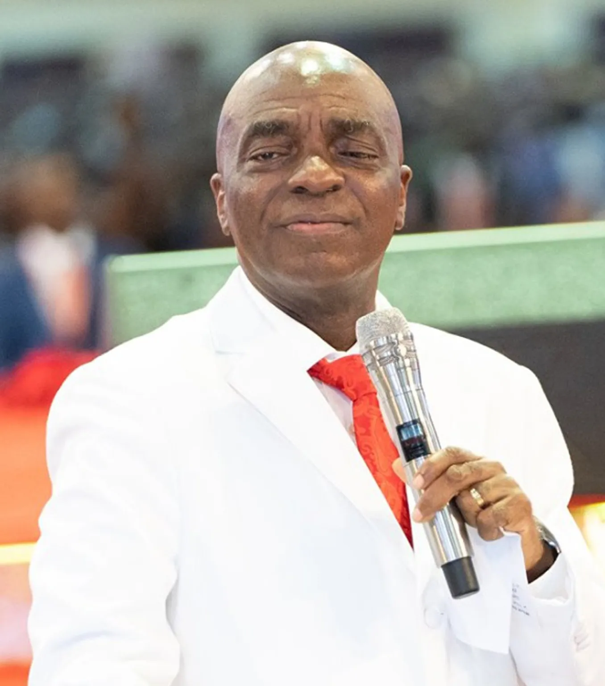
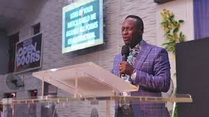

"But seek ye first the kingdom of God, and his righteousness;
and all these things shall be added unto you"-Matthew 6:33

Founder & President, Living Faith Church Worldwide
Bishop David O. Oyedepo received a call into the ministry through a heavenly vision, where he saw a lineup of battered, beaten, tattered, deformed, groaning for escape, he began sobbing with the.

STATE PASTOR (LFC ABEOKUTA)
Bishop David O. Oyedepo received a call into the ministry through a heavenly vision, where he saw a lineup of battered, beaten, tattered, deformed, groaning for escape, he began sobbing with the.
Our Mandate for ministry was received from God in an 18-hour vision to the presiding Bishop of this commission, Bishop David O Oyedepo. During this vision, a commission was received from God to liberate mankind in all facets of human existence, to restore broken destinies, to bring healing to the infirmed.
This was the Divine mandate received from God:
“Now the hour has come to liberate the world from all oppressions of the devil through the preaching of the word of faith, and I am sending you to undertake this task.”
This mandate was further confirmed from the epistle of Paul to the Ephesians where God Said, “Above all, taking the shield of faith, wherewith ye shall be able to quench all the fiery darts of the wicked” (Eph 6:16). This was the genesis of this global ministry today and according to this mandate, the Word of Faith is the key to triumphant living.
Shortly, thereafter, a weekly teaching programme took-off, popularly known as the Faith Liberation Hour. Alongside, a caucus was put in place, tagged The Power House which was involved in prayers and fasting among others towards the actualization of this heavenly vision.
Today, testimonies of liberation through our messages, books, CDs, DVDs, magazines, and other periodicals are most humbling. The word of faith is working like fire for the liberation of mankind across the nations.
David Oyedepo received a mandate from God in an 18-hour long vision in May 1981 to liberate the world from all oppressions of the devil through the preaching of the word of faith. This is the inaugural vision that led to the founding of the Living Faith Church World Wide (LFCWW), first called Liberation Faith Hour Ministries, in 1981. Two years after, on September 17, 1983, Pastor Enoch Adeboye, the General Overseer of the Redeemed Christian Church of God, ordained David Oyedepo and his wife, Florence Abiola Akano (now known as Faith Abiola Oyedepo) as pastors and also officially commissioned the newly started church. Five years after, David Oyedepo was ordained a Bishop.
Living Faith Church (AKA Winners Chapel) started in Kaduna, but David Oyedepo moved to Lagos, the former capital of Nigeria in September 1989, to start a new branch after receiving an instruction from God to reach out to the population in Lagos. This Church in Lagos grew to become the International headquarters of Living Faith Church, with a constantly increasing flow of crowds spilling over to adjacent roads, and on decks of uncompleted buildings nearby, compelling people to stand for hours to listen to his teachings. This led to the building of the renowned Faith Tabernacle, as instructed by God.
David Oyedepo is an acclaimed author and publisher who has written over 70 titles apart from periodicals. He is also Chairman/Publisher of Dominion Publishing House (DPH), a publishing arm of his ministry. DPH has over 4 million prints in circulation to date. Through God’s grace upon him, Covenant University, Landmark University, Faith Academy and Kingdom Heritage Model Schools have been established to equip the youth for impact.